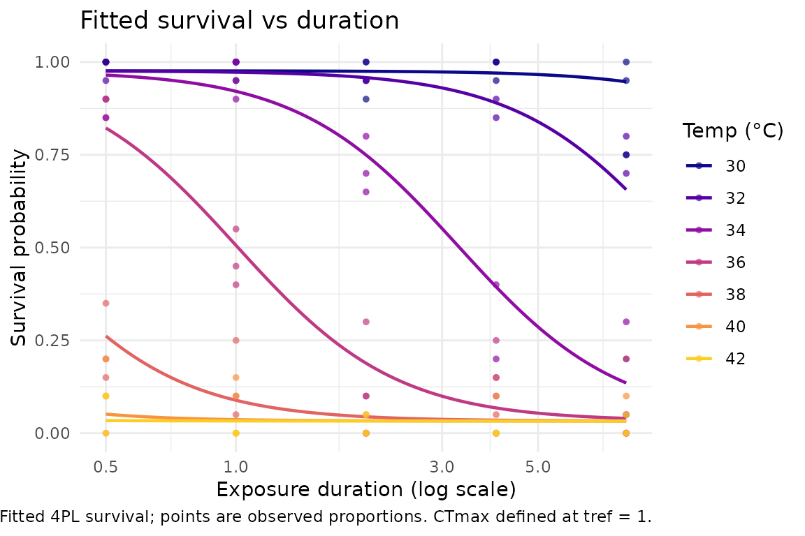
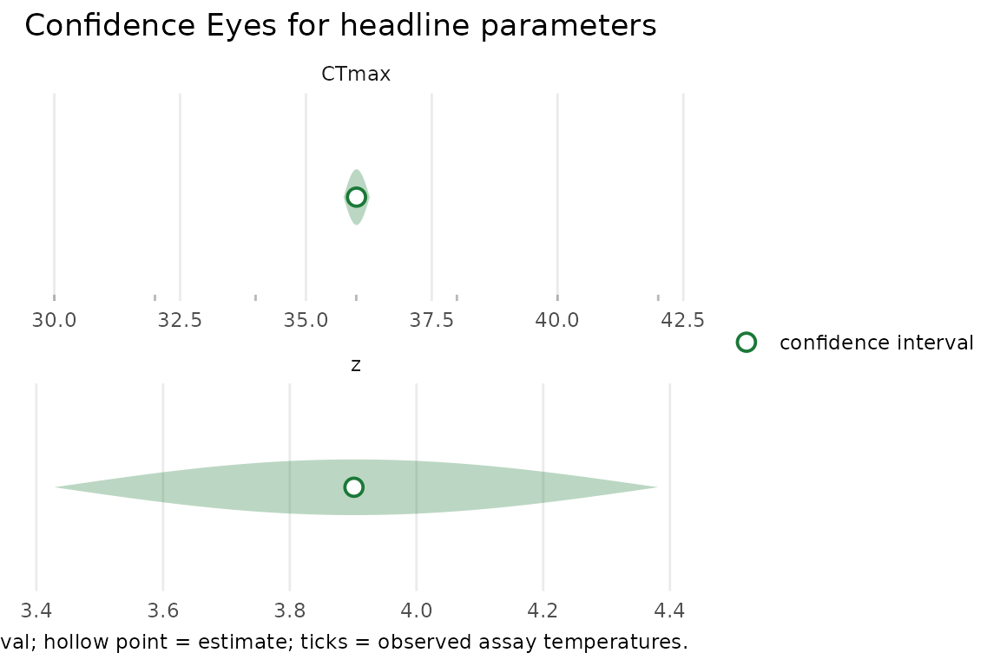

freqTLS fits single-stage four-parameter logistic (4PL)
thermal-load-sensitivity (TLS) / thermal death-time models by maximum
likelihood, parameterised directly in CTmax and
z (thermal sensitivity — the temperature rise that
cuts the tolerated exposure roughly tenfold), and returns prior-free
frequentist confidence intervals — Wald,
profile-likelihood (asymmetry-respecting, the default), and bootstrap.
It is the likelihood complement to the Bayesian bayesTLS
package; the modelling framework is theirs (see
vignette("comparing-to-bayesTLS") for the relationship and
credit).
This vignette walks through the core loop: simulate → fit → confidence intervals → plot. It runs end to end with a small simulation and needs no Stan, no MCMC, and no internet.
Simulate a dataset
simulate_tls() draws survival counts from the locked
data-generating process: a factorial grid of assay temperatures and
exposure durations, with the 4PL evaluated at the supplied true
CTmax, z, and shape parameters. We use the
overdispersed beta-binomial family here; phi is its
precision parameter — larger phi means less
overdispersion, approaching the ordinary binomial as phi
grows.
set.seed(1)
dat <- simulate_tls(
temps = seq(30, 42, by = 2),
times = c(0.5, 1, 2, 4, 8),
reps = 3,
n = 20,
CTmax = 36,
z = 4,
phi = 50,
family = "beta_binomial",
seed = 1
)
head(dat)
#> temp duration total survived p
#> 1 30 0.5 20 20 0.97988215
#> 2 32 0.5 20 18 0.97856626
#> 3 34 0.5 20 20 0.96282035
#> 4 36 0.5 20 17 0.80560767
#> 5 38 0.5 20 3 0.27915697
#> 6 40 0.5 20 2 0.04828075Each row is one temperature-by-duration cell: survived
out of total individuals survived the exposure. The true
parameters used to generate the data are kept as an attribute, which is
handy for checking recovery:
Standardise and fit the model
freqTLS mirrors the bayesTLS workflow.
First standardize_data() names the temperature, duration,
and survival-count columns and records the data contract; then
fit_4pl() fits the 4PL by maximum likelihood and returns a
freq_tls workflow object. t_ref is the
reference time at which CTmax is defined: the twin facade
fit_4pl() uses the bayesTLS spelling
t_ref (default 60), while the lower-level engine
fit_tls() (below) uses tref (default 1) — the
same quantity, in the data’s duration unit. The simulated durations here
are already in reference units, so we pass 1.
std <- standardize_data(
dat,
temp = "temp",
duration = "duration",
n_total = "total",
n_surv = "survived"
)
fit <- fit_4pl(std, family = "beta_binomial", t_ref = 1)
fit
#> <freq_tls>
#> Data: 105 rows; 7 temperatures; 5 durations
#> T_bar: 36.00
#> Family: beta_binomial (relative threshold, t_ref = 1 hours)
#> Fit: converged (pdHess = TRUE); default CI method = profileFormula interface
For the supported moderators, fit_4pl() takes a
similar direct interface to bayesTLS —
ctmax =, z =, or the by =
shorthand (e.g. by = "life_stage" for a grouped fit). Under
the hood the engine also exposes a
brms/drmTMB-style grammar via
tls_bf() — the left-hand side names the survival counts
(successes | trials(total)), the right-hand side tags the
two axes with the time() and temp() markers —
which feeds the same likelihood, so the two fits are numerically
identical:
fit_f <- fit_tls(
tls_bf(survived | trials(total) ~ time(duration) + temp(temp)),
data = dat,
family = "beta_binomial",
tref = 1
)
all.equal(coef(fit_f), coef(fit))
#> [1] TRUEThe grammar scales well beyond a single ungrouped fit: each
sub-parameter can take a grouping factor, a continuous covariate, or an
lme4-style random intercept. See Going
further below.
The print method reports the headline quantities (CTmax,
z), the shape parameters (low,
up, k), the overdispersion phi,
and the convergence status. summary() adds standard errors
and the log-likelihood:
summary(fit)
#> <freqTLS beta_binomial 4PL fit> summary
#> Call: fit_tls(x = ff, family = fam_name, tref = t_ref, start = start, control =
#> control, trace = trace, quiet = quiet, data = data)
#> Reference time (tref): 1 | family: beta_binomial
#> Data: 105 observations, ungrouped
#>
#> Coefficients (natural scale; Wald z-test):
#> parameter group estimate std.error z value Pr(>|z|)
#> low 0.0328 0.008901 3.685 2.284e-04
#> up 0.9761 0.009545 102.300 0.000e+00
#> k 5.4080 0.684200 7.904 2.696e-15
#> CTmax all 36.0000 0.129300 278.500 0.000e+00
#> z all 3.9010 0.236600 16.490 4.262e-61
#> phi 26.6800 10.640000 2.507 1.219e-02
#> Optimiser: nlminb | code 0 | pdHess TRUE | converged (pdHess)
#> logLik -152.8 | df 6 | AIC 317.6A tidy, broom-style table of all natural-scale parameters is
available with tidy_parameters(), and the headline
quantities have dedicated extractors:
tidy_parameters(fit)
#> # A tibble: 6 × 8
#> parameter group estimate std.error conf.low conf.high interval_type scale
#> <chr> <chr> <dbl> <dbl> <dbl> <dbl> <chr> <chr>
#> 1 low NA 0.0328 0.00890 0.0191 0.0557 wald logit
#> 2 up NA 0.976 0.00954 0.957 0.995 wald identity
#> 3 k NA 5.41 0.684 4.21 6.95 wald log
#> 4 CTmax all 36.0 0.129 35.7 36.3 wald identity
#> 5 z all 3.90 0.237 3.46 4.40 wald log
#> 6 phi NA 26.7 10.6 12.1 58.9 wald log
get_ctmax(fit)
#> # A tibble: 1 × 8
#> parameter group estimate std.error conf.low conf.high interval_type scale
#> <chr> <chr> <dbl> <dbl> <dbl> <dbl> <chr> <chr>
#> 1 CTmax all 36.0 0.129 35.7 36.3 wald identity
get_z(fit)
#> # A tibble: 1 × 8
#> parameter group estimate std.error conf.low conf.high interval_type scale
#> <chr> <chr> <dbl> <dbl> <dbl> <dbl> <chr> <chr>
#> 1 z all 3.90 0.237 3.46 4.40 wald logProfile-likelihood confidence intervals
The reason for the direct CTmax/z
parameterisation is that both headline quantities are model
coordinates, so they can be profiled directly.
confint() with method = "profile" (the
default) inverts the likelihood-ratio test: the interval is the set of
values whose deviance from the maximum stays below the
profile-
cutoff (a squared
Student-
quantile on the residual degrees of freedom, not
;
see vignette("frequentist-and-bayesian")), found by
root-finding on each side of the MLE.
confint(fit, parm = "CTmax", method = "profile")
#> # A tibble: 1 × 8
#> parameter conf.low conf.high estimate level method scale conf.status
#> <chr> <dbl> <dbl> <dbl> <dbl> <chr> <chr> <chr>
#> 1 CTmax 35.7 36.3 36.0 0.95 profile identity ok
confint(fit, parm = "z", method = "profile")
#> # A tibble: 1 × 8
#> parameter conf.low conf.high estimate level method scale conf.status
#> <chr> <dbl> <dbl> <dbl> <dbl> <chr> <chr> <chr>
#> 1 z 3.43 4.38 3.90 0.95 profile log okThese are confidence intervals, not posteriors: they
carry no prior, and they need not be symmetric about the estimate. The
conf.status column reports "ok" when the
profile closes on both sides; a weakly identified parameter is flagged
rather than given a fabricated bound (see
vignette("profile-likelihood")).
For comparison, the first-order Wald interval is available with
method = "wald":
Plot the fit
plot_survival_curves() draws the fitted survival
probability against exposure duration, one curve per temperature, with
the observed proportions overlaid:
plot_survival_curves(fit)
The default uncertainty display is the Confidence Eye: a pale confidence lens with a hollow point estimate. It is freqTLS’s visual identity and deliberately avoids posterior-density iconography, because these are likelihood intervals. Read the lens width as the confidence interval and the hollow circle as the maximum-likelihood estimate; two eyes that clearly fail to overlap are distinguishable at the confidence level, and a hollow point with no lens flags a profile that did not close (a weakly identified parameter).
plot_confidence_eye(fit, parm = c("CTmax", "z"), method = "profile")
Going further: groups, shape predictors, and random effects
The same tls_bf() grammar scales from the single fit
above to grouped, covariate, and hierarchical models.
Other families. Besides
"beta_binomial", fit_tls() accepts
"binomial" (no overdispersion) and "beta" (a
continuous proportion in (0, 1) with no trials column; the runnable
example below uses simulated beta data).
Grouped CTmax and z. Put a
grouping factor on a sub-parameter to estimate a separate, directly
profile-able CTmax and z per group, with one
shared curve shape (the bayesTLS constant-shape
configuration). In the formula, z enters on its internal
log scale as log_z (and steepness as log_k),
so the grouped term is written log_z ~ group. Intervals are
still requested by the natural-scale name (z:cool, not
log_z:cool) — confint() converts
internally:
dat_grp <- simulate_tls(
temps = seq(30, 42, by = 2), times = c(0.5, 1, 2, 4, 8), reps = 3, n = 20,
group = c("cool", "warm"), CTmax = c(34, 38), z = c(3, 5),
phi = 50, family = "beta_binomial", seed = 2
)
fit_grp <- fit_tls(
tls_bf(
survived | trials(total) ~ time(duration) + temp(temp),
CTmax ~ group,
log_z ~ group
),
data = dat_grp, family = "beta_binomial", tref = 1
)
confint(fit_grp, c("CTmax:cool", "CTmax:warm", "z:cool", "z:warm"),
method = "profile")
#> # A tibble: 4 × 8
#> parameter conf.low conf.high estimate level method scale conf.status
#> <chr> <dbl> <dbl> <dbl> <dbl> <chr> <chr> <chr>
#> 1 CTmax:cool 33.7 34.1 33.9 0.95 profile identity ok
#> 2 CTmax:warm 37.6 38.2 37.9 0.95 profile identity ok
#> 3 z:cool 2.47 3.18 2.82 0.95 profile log ok
#> 4 z:warm 4.48 5.49 4.98 0.95 profile log okShape predictors. The shape parameters are no longer
intercept-only: low, up, and
log_k each take their own grouping factor or continuous
covariate (for example low ~ group or
log_k ~ body_size). See ?tls_bf.
A random intercept. Add an lme4-style
(1 | group) term to let a sub-parameter vary across groups
drawn from a population — here CTmax varies by
colony:
dat_re <- simulate_tls(
temps = seq(30, 42, by = 2), times = c(0.5, 1, 2, 4, 8), reps = 2, n = 20,
CTmax = 36, z = 4, phi = 50, family = "beta_binomial",
re_sd = 1.2, n_re_groups = 10, seed = 3
)
fit_re <- fit_tls(
tls_bf(
survived | trials(total) ~ time(duration) + temp(temp),
CTmax ~ (1 | colony)
),
data = dat_re, family = "beta_binomial", tref = 1
)
fit_re
#> <freqTLS beta_binomial 4PL fit>
#> Call: fit_tls(x = tls_bf(survived | trials(total) ~ time(duration) +
#> temp(temp), CTmax ~ (1 | colony)), family = "beta_binomial", tref = 1, data =
#> dat_re)
#> Reference time (tref): 1 | CTmax defined at this time
#> Data: 700 observations, ungrouped; 7 temperatures in [30, 42], 5 durations in
#> [0.5, 8]
#> 5798 survivors of 14000 trials
#> Random intercept on CTmax: (1 | colony), 10 groups
#>
#> parameter group estimate std.error
#> low 0.02283 0.002510
#> up 0.98090 0.003458
#> k 5.29100 0.215600
#> CTmax all 35.92000 0.315400
#> z all 4.03100 0.083040
#> phi 49.98000 11.580000
#> sigma_CTmax 0.98690 0.223500
#> Optimiser: nlminb | code 0 | pdHess TRUE | converged (pdHess)
#> Message: relative convergence (4)
#> logLik -967.4 | df 7 | AIC 1949
head(ranef(fit_re))
#> # A tibble: 6 × 4
#> group term estimate std.error
#> <chr> <chr> <dbl> <dbl>
#> 1 g1 CTmax -1.18 0.330
#> 2 g10 CTmax 1.60 0.330
#> 3 g2 CTmax -0.173 0.330
#> 4 g3 CTmax 0.257 0.329
#> 5 g4 CTmax -1.41 0.329
#> 6 g5 CTmax 0.258 0.329The intercept is integrated out by a Laplace approximation;
sigma_CTmax is its standard deviation and
ranef() returns the per-colony BLUPs. The population
CTmax interval is profiled under the random effect
(confint(fit_re, "CTmax"), the default), which propagates
the variance-component uncertainty that a Wald interval would
understate. Single random intercepts are supported on
CTmax, log_z, low, and
log_k; see vignette("random-effects") for the
full hierarchical workflow and the few-groups caveats (the variance
components are biased low when fewer than about eight groups are
sampled).
The core workflow at a glance
freqTLS deliberately mirrors the bayesTLS
workflow, so the same standardise → fit → quantities →
plot path runs by maximum likelihood. The map below shows the
main workflow and how each box twins a bayesTLS function.
The “freqTLS extras” box (gold, upper right) is the
frequentist-only addition — Wald / profile / bootstrap intervals and the
Confidence Eye — and the dashed “trace & repair helpers —
planned” box is the one piece not yet ported.
Where to next
-
vignette("model-math")— the 4PL, the directCTmax/zparameterisation, and the exact bridge tobayesTLS. -
vignette("profile-likelihood")— what the profile is doing, why intervals can be asymmetric, profile versus Wald, and the honest non-closing fallback. -
vignette("random-effects")— hierarchical thermal-tolerance models: random intercepts onCTmax,log_z,low, andlog_k, with their diagnostics. -
vignette("comparing-to-bayesTLS")— the three-way comparison (classical two-stage, Bayesian, profile likelihood) and the credit for the framework.
Before interpreting any fitted model, run
check_tls(fit). The recovery guide in
?check_tls maps each warning to the next design or analysis
action; the profile article shows both the default bootstrap recovery
attempt and the strict fallback = FALSE open-profile
diagnostic.